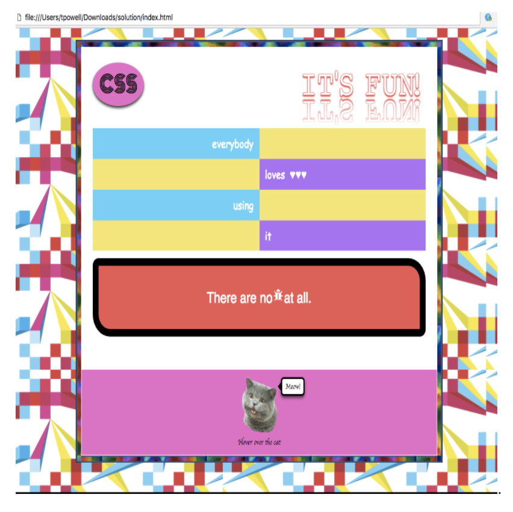

[Home](index.html)
## Structure, Style, Starter Code: Part Three
[<< Previous Lesson](lesson-htmlcss-2.html)&nbsp;&nbsp;|&nbsp;&nbsp;[Next Lesson >>](lesson-js-1.html)
### <span style="color:red">Final Challenge: Mirror, Mirror</span> <br>
<span style="color:grey">Source: [Professor Thomas Powell's CSE 134B Homework #2 - CSS Replication and Application](http://classes.pint.com/cse134b/homework/hw2.html)</span>
The time has come to test your CSS knowledge to its fullest extent! Given the HTML, we need you to replicate a mirror image of this beautiful design.

As mentioned in the last CSS lesson, keep in mind that your design has to be responsive, so that when you reduce your browser window to its smallest setting or open the page on mobile it should look like this.
Download the HTML starter code [here](images/hw2.zip).
<span style="color:blue">Tip: </span> There is no need to modify the HTML in any way.
[<< Previous Lesson](lesson-htmlcss-2.html)&nbsp;&nbsp;|&nbsp;&nbsp;[Next Lesson >>](lesson-js-1.html)